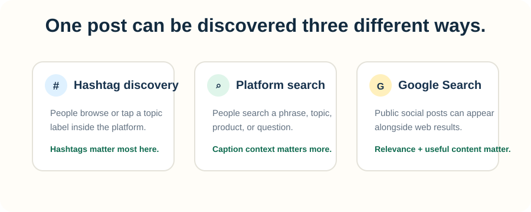
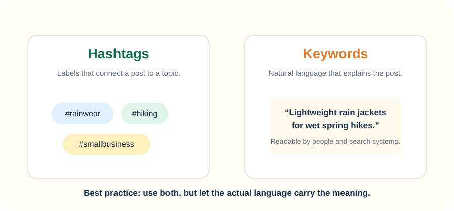
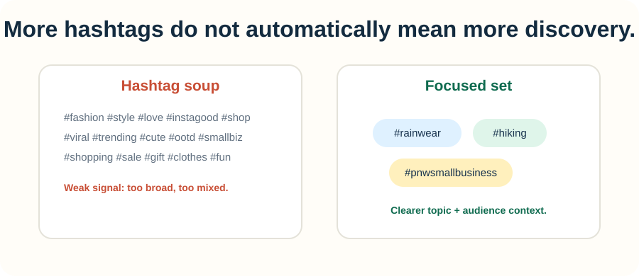

Hashtags are useful. They are also wildly over-credited.
A hashtag can help connect a social post to a topic, community, campaign, or conversation. What it cannot do is rescue unclear content, guarantee reach, or quietly transfer SEO authority to your website.
1. What do hashtags actually do?
At a high level, a hashtag is a label. It tells a platform and its users, “this post belongs with this topic.”
That can support discovery when someone browses a hashtag, searches for related content, or encounters posts grouped around the same subject. On YouTube, for example, hashtags in titles and descriptions link to results pages containing other videos that use the same hashtag.
But a hashtag is only one clue. Platforms also have the caption, title, video or image itself, audience behavior, and engagement signals to work with.

2. Hashtags and keywords are related, but they are not the same thing
A hashtag is usually a compact label: #rainwear.
A keyword or search phrase is the language someone might actually type or say: lightweight rain jackets for spring hiking.
The strongest social content usually does not choose between the two. It uses natural language to explain the post and a focused set of hashtags to classify it.

3. Do hashtags help your Google SEO?
Not in the simple “add a hashtag and rank higher” sense. Google’s own search guidance focuses on helpful content, words people use to search, crawlable links, and clear page context. It does not present social hashtags as a direct website ranking factor.
What has changed is that the wall between social content and Google Search is thinner than it used to be. Google now lets creators track how public content from platforms including Instagram, TikTok, X, and YouTube performs in Google Search, Discover, and Google News through Search Console platform properties.
So a public social post itself can become a Google search result. In that situation, a relevant hashtag may contribute context, but the post still has to be useful and relevant to the search.
4. How should you choose hashtags?
Start with the content, not a list of trending tags.
A useful hashtag should answer at least one of these questions: What is this about? Who is it for? What community or campaign does it belong to?
A simple starting framework
Use a small cluster of tags that describe the post from different angles. One might identify the broad topic, another the specific use case, another the intended community, and another your own brand or campaign when that is useful.
That is a starting framework, not a universal platform rule. Different networks treat hashtags differently, and those systems change. Relevance is the part worth keeping constant.
5. Avoid hashtag soup
Adding every vaguely related hashtag can make your post look less intentional without making the topic clearer.
On YouTube, the platform explicitly warns against over-tagging: if a video or playlist contains more than 60 hashtags, YouTube ignores all of them. You do not need to get anywhere near that extreme for the underlying lesson to be useful.

Also avoid adding a popular hashtag just because it is popular. If the tag and the content do not match, you are sending the wrong signal to both the audience and the platform.
6. The better strategy: connect social search and site SEO
The useful goal is not to make every social post look like a search-optimized web page. It is to keep your topic language consistent enough that your social content and your website support the same customer journey.
That is where hashtags become genuinely useful to SEO work: not because the # symbol boosts a page, but because a disciplined tagging system can help you notice which topics, products, and audience language keep showing up across channels.
Where Penstack fits in
Penstack starts with the same product context you already use to build titles, descriptions, tags, and collections. That gives you a cleaner vocabulary to carry into social content instead of inventing a completely different language for every channel.
The goal is not to generate a giant hashtag block. It is to keep the product, the search intent, and the way you describe it connected.
See how Penstack keeps product content and search context connected →
The takeaway
Hashtags help classify social content. Clear language explains it. Useful content earns attention. SEO benefits when those pieces point to the same topic instead of competing with each other.
Make the product language do more work.
Penstack helps turn product context into clearer content for search, merchandising, and the channels that send people back to your store.